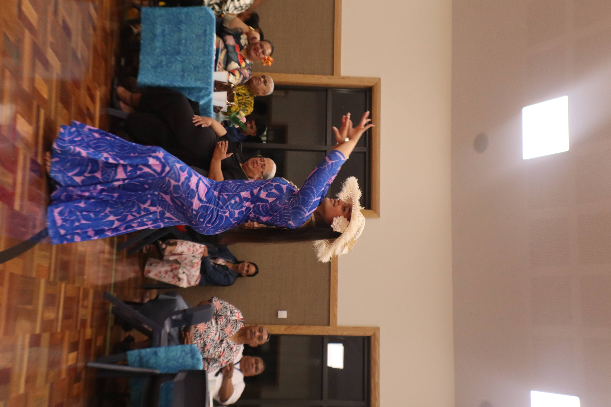
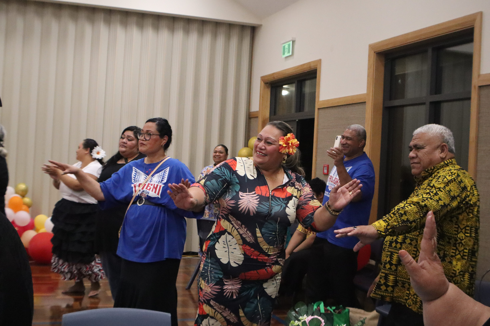

Welcome to Favona 1st Ward! We are members of the Church of Jesus Christ of latter day saints
"We believe in God the Eternal Father, and in his son Jesus Christ, and in the Holy Ghost"
-Article of Faith #1 found in the 'Pearl of Great Price'
We believe that Joseph Smith is a prophet of God. He was an important person in the church
because on the 6th of April, 1830 he restored the gospel. In saying this, without Joseph Smith,
none of us members would be where we are today. We believe that Jesus Christ is our saviour and
willingly sacraficed himself for our sins out of love. He loves us unconditionally.
Members of the church of Jesus Christ of Latter-day Saints are definetly Christians! We consider ourselves as devoted followers of Christ. A christian is someone that believe in God and we do believe in God.
The Book of Mormon is another testament of Jesus Christ. A book that goes hand in hand with the
Bible. With both the Bible and the Book of Mormon together, we are given a greater understanding
of the saviours teachings therefore, helping us to build our faith and relationship with Him. Where
did Mormon come from? Mormon is the name of an ancient prophet from many years ago who compiled a
record of his people.
IF you would like to learn more or read more on the book of mormon click
here
to get a free book!
Have you ever sees a massive white temple in your area and wondered what it's all about? A temple is
a special place for members of the church that have been given access to enter to perform ceremonies.
This means that not all members can enter the temple. Where does the church get enough money
to build these massive buildings? A process called 'tithing' which is a donation to the church. How it
works is that when a member wants to pay tithing, they will only need to pay 10% of their earnings. Overall,
the temple is a sacred and beautiful place for members.
Currently, through out the whole world there has been 211 temples built, 2 being in New Zealand.

